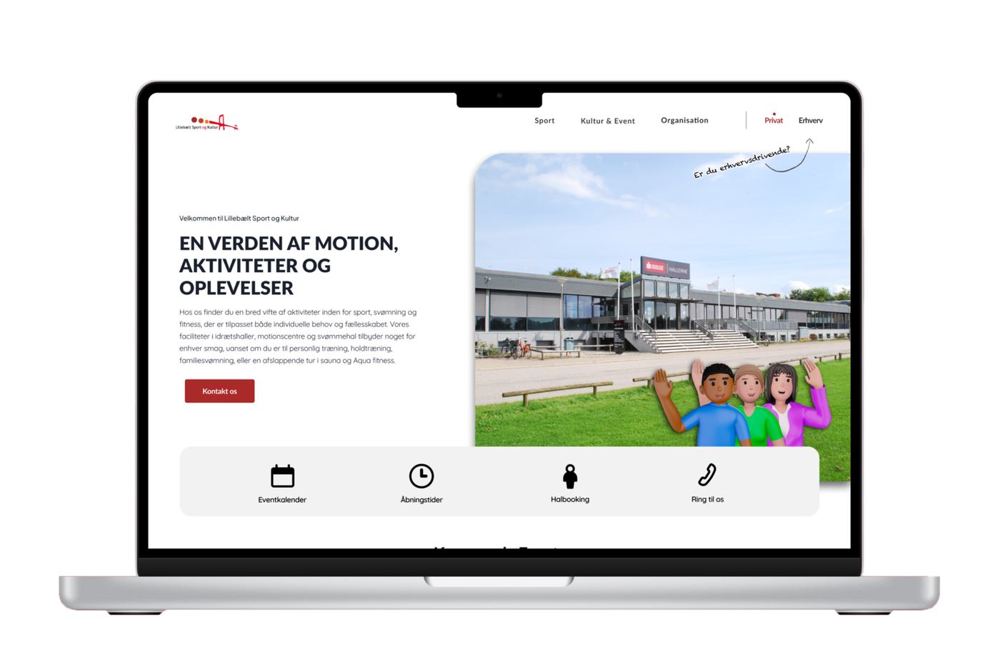

Re-design af en hjemmeside
Tilføj din overskrift her

Re-design af Lillebælt Sport & Kulturs hjemmeside
Projektet fokuserer på at analysere, forbedre og redesigne LSOK’s hjemmeside, så den bliver mere brugervenlig, overskuelig og professionel. Gennem heuristisk evaluering, brugertests og moderne designprincipper har vi skabt et redesign, der afspejler LSOK’s værdier – fællesskab, bevægelse og kvalitet.
Formål og problemstilling
Da vi skulle påbegynde redesignet, stod det hurtigt klart, at den gamle hjemmeside manglede både struktur og tydelig retning. Navigationen var omfattende og uoverskuelig, og de mange menupunkter gjorde det svært for brugeren at orientere sig. Det visuelle udtryk skabte tilsvarende forvirring, fordi der var meget lidt hierarki i både tekst, billeder og knapper, og man blev ikke guidet igennem siden. Det var derfor nemt at miste overblikket, selv når man blot forsøgte at udføre simple handlinger.
Det centrale formål i redesignet blev at skabe en mere rolig og struktureret oplevelse med fokus på overskuelighed, tydelig navigation og et ensartet visuelt udtryk. Vi ønskede at gøre det nemt at finde relevant indhold, uanset om brugeren er privat kunde eller virksomhed.
Research og metoder
For at forstå både problemerne og brugernes behov begyndte vi med en heuristisk evaluering baseret på Jakob Nielsens usability-principper. Dette hjalp os med at identificere centrale problemer i navigationen, det visuelle hierarki og strukturen. Vi udførte også en desirability-test, hvor brugere vurderede, hvordan de oplevede hjemmesidens udtryk og stemning. Denne test viste tydeligt, at brugerne ønskede en mere moderne og overskuelig side med tydelige handlingselementer.
Derudover gennemførte vi en konkurrentanalyse for at undersøge, hvordan lignende organisationer kommunikerer online. Det gav os inspiration til, hvordan vi kunne skabe et mere intuitivt layout og en bedre opdeling mellem privat- og erhvervsindhold.
Vi lavede også brugertests af både den eksisterende hjemmeside og vores hi-fi Figma-prototype. Testene gjorde det muligt at observere, hvor brugerne blev i tvivl, hvor de stoppede op, og hvilke løsninger der fungerede bedst. På baggrund af denne feedback finjusterede vi designet løbende.
Style Tile og visuel identitet
For at skabe en ensartet visuel identitet udviklede vi en style tile i Figma. Her fastlagde vi farver, typografi, knapper, ikoner og UI-elementer, som skulle gå igen på hele hjemmesiden. Vi valgte farver, der tager udgangspunkt i LSOK’s rød fra logoet, kombineret med sort, hvid og grå for at skabe kontrast og ro.
Typografierne Lato og Quicksand blev valgt, fordi de skaber et moderne, professionelt og venligt udtryk på samme tid. Style tile’en dannede grundlaget for et stringent design med en tydelig rød tråd på tværs af alle sider og sektioner.
Designproces og C.R.A.P.-principper
Hele redesignet blev opbygget ud fra et 12-column grid, som gav os mulighed for at arbejde struktureret med luft, linjer og alignment. For at skabe et visuelt hierarki tog vi udgangspunkt i C.R.A.P.-principperne: Kontrast, Repetition, Alignment og Proximity.
Kontrasten blev styrket ved at bruge klare røde knapper og skygger på billederne, så de fremstod tydeligt på en lys baggrund. Repetition skabte sammenhæng ved at gentage de samme farver, knapper og designkomponenter gennem hele sitet. Alignment blev sikret ved, at alle elementer blev justeret efter grid-strukturen, hvilket skabte balance og et professionelt udtryk. Proximity gjorde det nemmere at afkode indholdet ved at gruppere tekst, billeder og ikoner logisk.
Afdelinger og 3D-repræsentanter
En vigtig del af vores redesign blev udviklingen af tre 3D-karakterer, som repræsenterer LSOK’s hovedafdelinger: Sport-Sander, Kultur-Kira og Erhverv-Eva. Hver figur er skabt til at visualisere en bestemt målgruppe og skabe genkendelighed i kommunikationen.
Sport-Sander repræsenterer energi og fællesskab i sportsafdelingen, Kultur-Kira symboliserer kreativitet og kulturliv, mens Erhverv-Eva repræsenterer professionalisme og ro for B2B-kunder. Disse figurer bruges i markedsføring og på hjemmesidens undersider for at hjælpe brugerne med hurtigt at afkode, hvilket indhold der er rettet mod dem.
Brugertest af redesign
Efter vi havde udviklet vores hi-fi prototype i Figma, udførte vi en brugertest for at evaluere, hvordan brugerne oplevede det nye layout. Testpersonerne oplevede hurtigt, at den nye side var mere overskuelig og moderne. Flere beskrev, hvordan øjnene “får lov til at bevæge sig naturligt gennem siden”, og at de følte sig langt bedre guidet end på den gamle hjemmeside.
Brugertesten bekræftede, at vores fokus på luft, struktur og tydelige call-to-actions havde en positiv effekt på brugeroplevelsen. De vigtigste funktioner fremstod mere logiske og intuitive, og navigationen blev oplevet som markant enklere.
Resultat og Konklusion
Det færdige redesign af Lillebælt Sport & Kulturs hjemmeside endte med at blive en langt mere brugervenlig, rolig og moderne løsning, end den vi startede med. Vi fik skabt en mere tydelig struktur, hvor det er nemt at se forskellen på indhold til private og erhvervskunder, og vi brugte ensartede designprincipper for at holde en rød tråd hele vejen igennem. De vigtigste handlingselementer – som “Ring til os” og “Book nu” – blev gjort synlige og nemme at finde, så brugerne ikke længere skal lede efter det mest basale.
Overordnet set fremstår hjemmesiden nu langt mere samlet og professionel, og det er blevet lettere for brugerne at navigere uden at føle sig overvældet. Den nye visuelle identitet giver et meget mere roligt udtryk, og vi kan tydeligt se, at designet nu understøtter LSOK’s kommunikation bedre end før.
Refleksion
Hvis jeg skal være helt ærlig, så har det her projekt været ret hårdt – især fordi det var vores allerførste store projekt på studiet. I starten tror jeg, at vi tog alt for meget på os. Vi ville gerne gøre det hele perfekt, analysere alt, lave mange undersider og tilføje flere idéer, end vi egentlig kunne nå at udføre. Det gav os nogle ret pressede perioder undervejs, hvor vi blev nødt til at stoppe op og indse, at vi skulle prioritere helt anderledes, hvis vi ville nå i mål.
Men netop dét endte faktisk med at være noget af det mest lærerige. Jeg fandt ud af, hvor vigtigt det er at holde fokus, vælge sine løsninger med omtanke og acceptere, at man ikke kan nå alt. Jeg lærte også, hvor meget det betyder at teste ting løbende – ikke som en “sidste ting”, men som en del af hele arbejdsprocessen. Brugertestene ændrede faktisk vores design mere, end jeg troede, de ville.
Jeg føler, at projektet har givet mig en bedre forståelse for, hvad brugercentreret design egentlig vil sige i praksis, og hvor meget der ligger bag et redesign, som udefra måske ser simpelt ud. Vi skulle både tænke struktur, UX, visuel identitet, målgrupper og tekniske løsninger på samme tid. Det var svært – men også ret fedt, når tingene pludselig begyndte at hænge sammen.
Alt i alt står jeg tilbage med følelsen af, at selvom vi på nogle tidspunkter var ved at drukne i opgaver, så kom vi stærkere ud af det. Og nu, hvor resultatet er færdigt, kan jeg faktisk godt se, at det hårde arbejde var det værd.